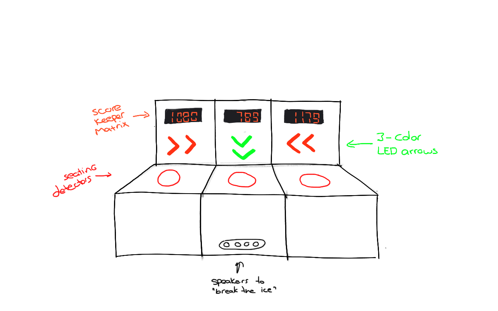

Research
⇑First, I started looking into what other people had already designed. I came across one project that immediately grabbed my attention, if not just for the lack of detail and concrete description of what it was supposed to do.
The intimate bench
I came across this research paper on playful interaction. I really liked the intimate bench prototype they made. It's a bench with sensors and lights that are supposed to make people sit closer together. The paper doesn't really go into how it's supposed to do that, only that the shapes and lights "act in ways that strenghten the situation".
I really do like the concept, and the lack of in-depth description of how it's supposed to work got my brain going. How can I make a better and more elaborate version of this?
Experiment & Play
⇑Benchmark
I first sketched out my idea, to give it a bit of shape:
First I went to work on the LED lights. I went back to what I made in exercise 7C earlier. I don't have three big LED boards, but I do have one LED matrix, so that will do for this proof of concept. I changed the code to increase the number with the push of a button instead of by turning the potmeter, as a substitute for the 'seating detectors'.
#include "LedControl.h"
LedControl lc = LedControl(12,11,10,1);
const int seatPin = 3;
int sitCounter = 0; // counter for the number of button presses / times seated
int seatState = 0; // current state of the seat (button)
int lastseatState = 0; // previous state of the seat (button)
void setup() {
lc.shutdown(0,false);
lc.setIntensity(0,9);
lc.clearDisplay(0);
Serial.begin(9600);
// initialize the button pin as an input:
pinMode(seatPin, INPUT);
}
void loop(){
// read the pushbutton input pin:
seatState = digitalRead(seatPin);
// compare the seatState to its previous state
if (seatState != lastseatState) {
// if the state has changed, increment the counter
if (seatState == HIGH) {
// if the current state is HIGH then the button went from off to on:
sitCounter++;
Serial.print("amount of sits: ");
Serial.println(sitCounter);
} else {
// if the current state is LOW then the button went from on to off:
}
// Delay a little bit to avoid bouncing
delay(50);
}
// save the current state as the last state, for next time through the loop
lastseatState = seatState;
if (sitCounter == 0) {
lc.setRow(0,0,B00000000);
lc.setRow(0,1,B00011000);
lc.setRow(0,2,B00100100);
lc.setRow(0,3,B00101100);
lc.setRow(0,4,B00110100);
lc.setRow(0,5,B00100100);
lc.setRow(0,6,B00011000);
lc.setRow(0,7,B00000000);
}
else if (sitCounter == 1) {
lc.setRow(0,0,B00000000);
lc.setRow(0,1,B00001000);
lc.setRow(0,2,B00011000);
lc.setRow(0,3,B00101000);
lc.setRow(0,4,B00001000);
lc.setRow(0,5,B00001000);
lc.setRow(0,6,B00001000);
lc.setRow(0,7,B00000000);
}
else if (sitCounter == 2) {
lc.setRow(0,0,B00000000);
lc.setRow(0,1,B00011000);
lc.setRow(0,2,B00100100);
lc.setRow(0,3,B00000100);
lc.setRow(0,4,B00011000);
lc.setRow(0,5,B00100000);
lc.setRow(0,6,B00111100);
lc.setRow(0,7,B00000000);
}
else if (sitCounter == 3) {
lc.setRow(0,0,B00000000);
lc.setRow(0,1,B00011000);
lc.setRow(0,2,B00100100);
lc.setRow(0,3,B00001000);
lc.setRow(0,4,B00000100);
lc.setRow(0,5,B00100100);
lc.setRow(0,6,B00011000);
lc.setRow(0,7,B00000000);
}
else if (sitCounter == 4) {
lc.setRow(0,0,B00000000);
lc.setRow(0,1,B00001100);
lc.setRow(0,2,B00010100);
lc.setRow(0,3,B00100100);
lc.setRow(0,4,B00111100);
lc.setRow(0,5,B00000100);
lc.setRow(0,6,B00000100);
lc.setRow(0,7,B00000000);
}
else if (sitCounter == 5) {
lc.setRow(0,0,B00000000);
lc.setRow(0,1,B00111100);
lc.setRow(0,2,B00100000);
lc.setRow(0,3,B00111000);
lc.setRow(0,4,B00000100);
lc.setRow(0,5,B00100100);
lc.setRow(0,6,B00011000);
lc.setRow(0,7,B00000000);
}
else if (sitCounter == 6) {
lc.setRow(0,0,B00000000);
lc.setRow(0,1,B00011000);
lc.setRow(0,2,B00100100);
lc.setRow(0,3,B00100000);
lc.setRow(0,4,B00111000);
lc.setRow(0,5,B00100100);
lc.setRow(0,6,B00011000);
lc.setRow(0,7,B00000000);
}
else if (sitCounter == 7) {
lc.setRow(0,0,B00000000);
lc.setRow(0,1,B00111000);
lc.setRow(0,2,B00000100);
lc.setRow(0,3,B00001000);
lc.setRow(0,4,B00010000);
lc.setRow(0,5,B00100000);
lc.setRow(0,6,B00100000);
lc.setRow(0,7,B00000000);
}
else if (sitCounter == 8) {
lc.setRow(0,0,B00000000);
lc.setRow(0,1,B00011000);
lc.setRow(0,2,B00100100);
lc.setRow(0,3,B00011000);
lc.setRow(0,4,B00100100);
lc.setRow(0,5,B00100100);
lc.setRow(0,6,B00011000);
lc.setRow(0,7,B00000000);
}
else if (sitCounter == 9) {
lc.setRow(0,0,B00000000);
lc.setRow(0,1,B00011000);
lc.setRow(0,2,B00100100);
lc.setRow(0,3,B00011100);
lc.setRow(0,4,B00000100);
lc.setRow(0,5,B00100100);
lc.setRow(0,6,B00011000);
lc.setRow(0,7,B00000000);
}
else if (sitCounter == 10) {
lc.setRow(0,0,B00000000);
lc.setRow(0,1,B00100110);
lc.setRow(0,2,B01101001);
lc.setRow(0,3,B10101011);
lc.setRow(0,4,B00101101);
lc.setRow(0,5,B00101001);
lc.setRow(0,6,B00100110);
lc.setRow(0,7,B00000000);
}
else {
lc.setRow(0,0,B00000000);
lc.setRow(0,1,B00000000);
lc.setRow(0,2,B00000000);
lc.setRow(0,3,B00000000);
lc.setRow(0,4,B00000000);
lc.setRow(0,5,B00000000);
lc.setRow(0,6,B00000000);
lc.setRow(0,7,B00000000);
}
delay(10);
}